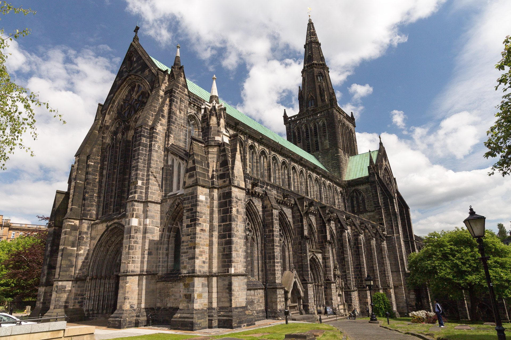
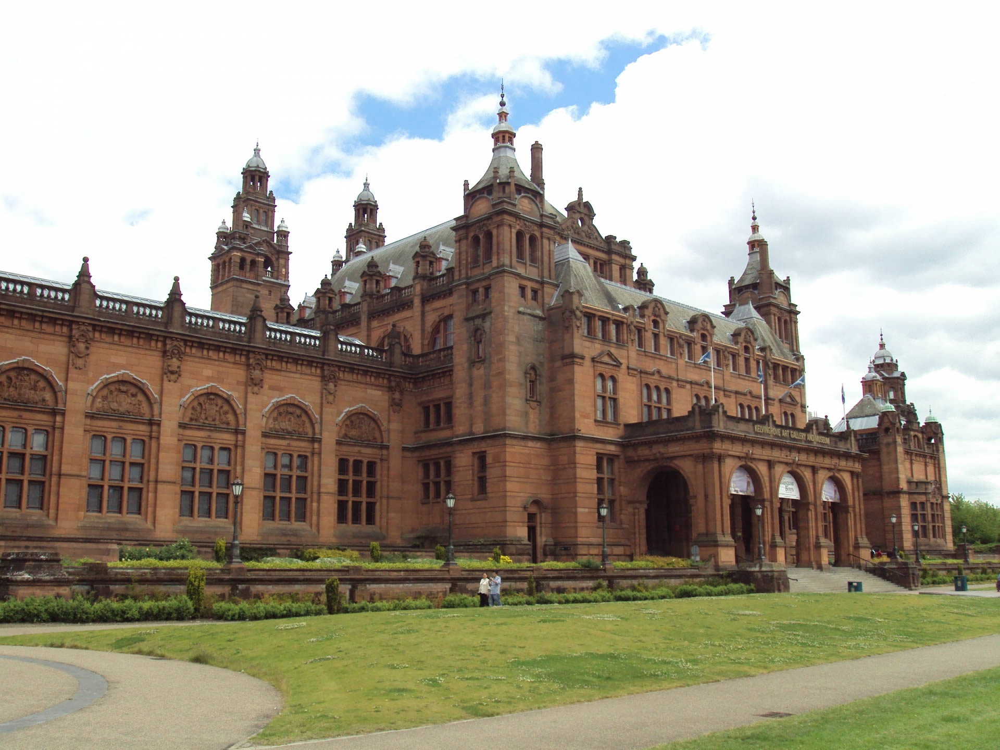
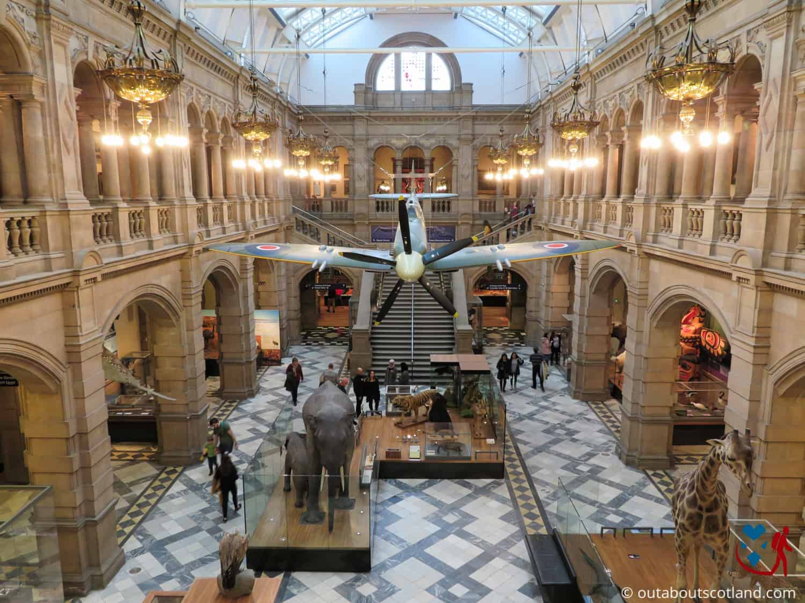
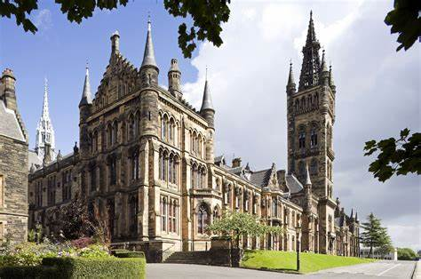
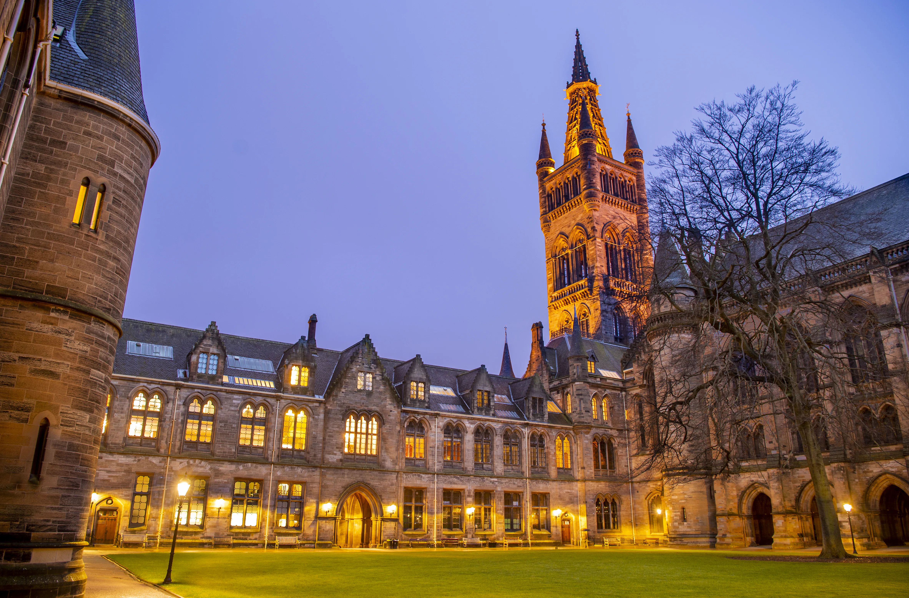

Glasgow's Heritage Landmarks
Glasgow boasts a rich historical tapestry, with architecture spanning centuries. From medieval cathedrals to grand Victorian museums, the city's past comes alive in every corner.
Glasgow Cathedral
A stunning example of medieval Gothic architecture, Glasgow Cathedral stands as one of the oldest and most historically significant buildings in Scotland. Its magnificent interior and centuries-old history draw visitors from all over the world.


Kelvingrove Art Gallery and Museum
Opened in 1901, Kelvingrove is famed for its grand Victorian architecture and extensive art collections. The building's ornate details and red sandstone exterior symbolize the prosperity of the era in which it was built.


University of Glasgow
Founded in 1451, the University of Glasgow features a distinctive Gothic Revival campus. Its iconic spires and quadrangles evoke the scholastic tradition, blending academia and architectural grandeur.

